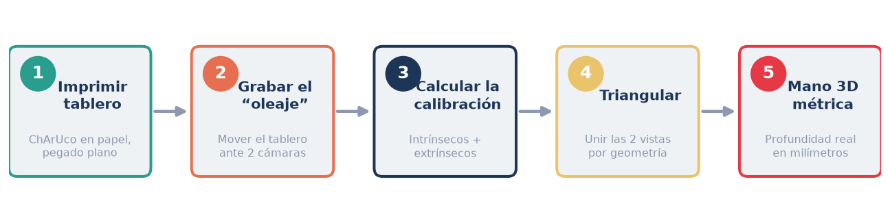
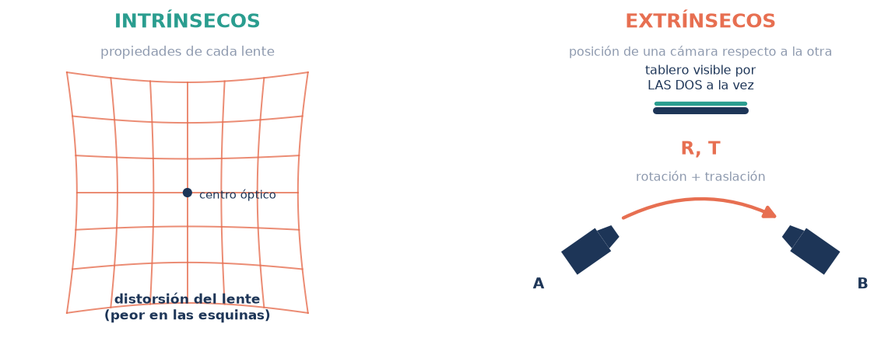
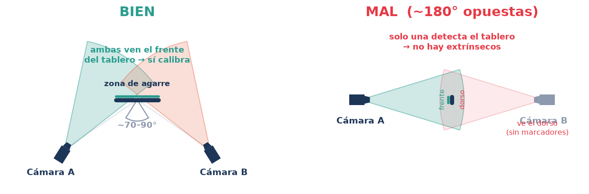
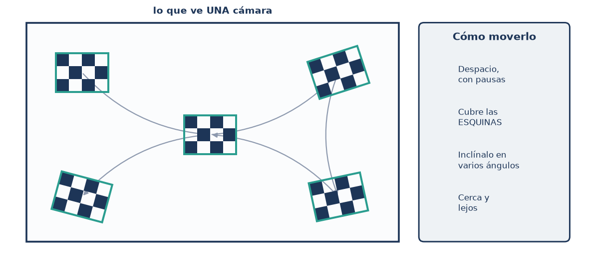
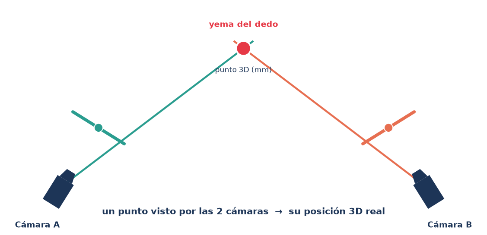

Captura y calibración de dos cámaras para reconstrucción 3D de la mano
Cómo grabar y calibrar dos cámaras para que el material permita una
reconstrucción 3D métrica de la mano. Guía visual centrada en la captura.
El proceso de un vistazo
Se imprime un tablero de calibración, se graba un video corto moviéndolo despacio
ante las dos cámaras a la vez, y con ese material se calcula la geometría exacta de las
cámaras. Después, los puntos de la mano detectados en cada vista se cruzan para obtener
posiciones 3D reales, en milímetros.

Las cinco etapas del proceso completo.
Alcance de esta guía
Esta guía cubre la captura: el tablero, la grabación de calibración y la grabación de
las secuencias (etapas 1 y 2). El cálculo de la calibración y la reconstrucción 3D
(etapas 3–5) son posteriores y se realizan a partir del material grabado.
Qué se mide al calibrar
Calibrar consiste en encontrar tres cosas. Las dos primeras son geométricas; la
tercera es de tiempo. Conocerlas ayuda a entender por qué la captura debe hacerse con
cuidado.
1 · Intrínsecos
Las propiedades internas de cada lente: distancia focal,
centro óptico y la distorsión, que siempre es más fuerte en las esquinas de la imagen.
2 · Extrínsecos
La posición y orientación de una cámara respecto a la otra.
Solo puede medirse cuando ambas cámaras ven el tablero al mismo tiempo.

Intrínsecos: la “personalidad” de cada lente. Extrínsecos: dónde está
una cámara con relación a la otra.
3 · Sincronización temporal
Saber qué fotograma de una cámara corresponde al de la otra. Una palmada fuerte al
inicio deja una marca de audio que permite alinear las dos grabaciones; con equipo
profesional puede usarse timecode o genlock por hardware.
El paso decisivo: el ángulo de las cámaras
Este es el factor más importante y el que casi nadie menciona. Para reconstruir en 3D,
las dos cámaras necesitan un campo de visión compartido sobre la zona
donde ocurre la acción. Conviene colocarlas a unos 70–90° entre sí, no
enfrentadas.

Con ~80° ambas ven el frente del tablero y pueden calibrarse. Casi
opuestas (~180°), una ve el dorso sin marcadores y la calibración entre cámaras es imposible.
Evita las cámaras enfrentadas
A ~180° una cámara ve el dorso del tablero (sin marcadores) y no es posible calcular
los extrínsecos. Si la escena exige cobertura opuesta, añade una tercera cámara
intermedia que enlace ambos lados.
Paso 1 · El tablero
Conviene un tablero ChArUco (un ajedrezado con marcadores), porque se
detecta con fiabilidad aunque aparezca parcialmente recortado. Se imprime a tamaño real
y se pega plano y rígido sobre cartón, sin ondas ni reflejos.
La regla de oro de la escala
Tras imprimir, mide con una regla el lado real de un cuadro y anótalo. Toda la escala
métrica (que el resultado salga en milímetros correctos) depende de esa medida.
Paso 2 · La “técnica del oleaje”
Con las dos cámaras grabando a la vez, se mueve el tablero por toda la escena. Ese
único clip sirve para los intrínsecos y los extrínsecos. La clave no es agitarlo: es un
recorrido lento y deliberado que cubra toda la imagen.

Recorre el centro y las cuatro esquinas, inclinando el tablero y
variando la distancia, siempre con movimientos lentos y pausas.
Haz
Muévelo despacio, con pausas en cada posición.
Cubre sobre todo las esquinas de la imagen.
Inclínalo en muchos ángulos, y de cerca y de lejos.
Mantenlo visible para las dos cámaras.
Evita
✗ Movimientos rápidos (el desenfoque arruina todo).
✗ El tablero pequeño o lejano.
✗ Brillos y reflejos sobre el papel.
✗ Mover o reenfocar las cámaras después.
Paso 3 · Grabar las secuencias
Una vez calibrado, se graban las acciones con el mismo rig fijo. Las
dos cámaras deben grabar a la vez y mantener exactamente la misma configuración usada en
la calibración.
Ajustes de cámara
Foco, exposición y balance de blancos bloqueados (modo manual).
Misma tasa de fotogramas en ambas (p. ej. 30 o 60 fps).
Resolución alta y constante (≥ 1080p).
Buena iluminación, difusa y sin sombras duras.
En cada toma
Una palmada al inicio para sincronizar por audio.
La mano dentro del campo común de las dos cámaras.
No mover ni tocar las cámaras entre tomas.
Fondo y luz estables durante toda la sesión.
Qué ocurre después de la captura
Esta parte queda fuera del alcance de la captura, pero ayuda a entender para
qué sirve el material: con la calibración lista, cada punto de la mano visto por las dos
cámaras se reconstruye en 3D métrico allí donde se cruzan los rayos. Cuanto mejor sea la
captura, mejor será esa reconstrucción.

Un punto visto por las dos cámaras se reconstruye en 3D por la
intersección de los rayos. Cualquier punto visible en al menos dos vistas se recupera.
Herramientas recomendadas para la captura
Grabación
Cámaras con control manual (foco, exposición y balance de
blancos bloqueados). Para webcams o varias cámaras a la vez, OBS Studio; en móvil,
apps con modo manual (p. ej. Open Camera o Filmic Pro).
Sincronización
Palmada o claqueta al inicio (marca de audio). Si el
equipo lo permite, timecode o genlock por hardware para sincronía exacta.
Tablero ChArUco
Generadores de patrón gratuitos (calib.io) o las
utilidades de OpenCV. Imprimir a tamaño real, montar plano y medir un cuadro.
Calibración (posterior)
El material del tablero se procesa con
herramientas como Pose2Sim o Anipose, hechas para 3D multicámara. Saber esto ayuda
a entregar videos con los requisitos correctos.
Lista de verificación
Cámaras a ~70–90°, con la zona de acción en el campo común.
Tablero impreso a tamaño real, plano y rígido.
Lado del cuadro medido con regla y anotado.
Video de calibración lento, cubriendo esquinas, inclinado, de cerca y de lejos.
Tablero visible para ambas cámaras buena parte del clip.
Ajustes de cámara en manual y bloqueados; misma tasa de fotogramas.
Palmada de sincronía al inicio de cada toma.
No mover ni reenfocar las cámaras tras calibrar; mismo rig para todo.